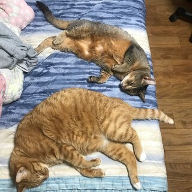

Taewon Kim

저는 성균관대학교 17학번 건설환경공학부에 재학중인 김태원입니다.
멋사 8기에 지원해 많은 사람들을 만나고 같이 공부하고 싶었는데 코로나 때문에 온라인 스터디만 해서 아쉬웠습니다.
Deep Dive Study로 다같이 만나서 열심히 공부하고 더 친해졌으면 좋겠습니다!!
저의 사진보다는 저희 집에 사는 두마리 돼냥이를 보시는 게 훨씬 낫습니다.
2학기부터 소프트웨어학과 복수전공을 계획하고 있습니다. 배운 것이라고는 파이썬과 C언어인데 이마저도 배운지 3년이 되어서 다 까먹었는데 제가 잘 할 수 있을까요? 전공이나 복수전공을 현재 하고 계신 분들에게 다가가고 싶습니다....흑